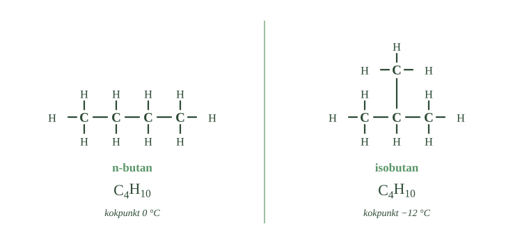
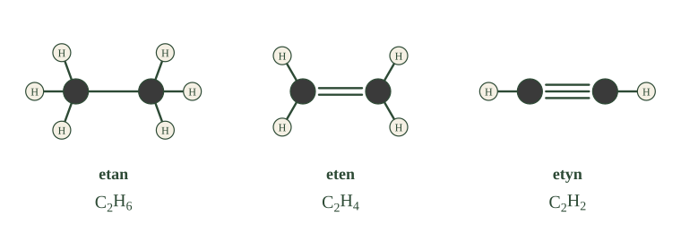
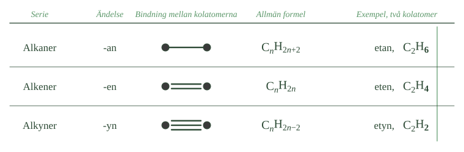

- Vid hur många kolatomer finns det för första gången mer än ett sätt att bygga kedjan?
- Vad är skillnaden mellan n-butan och isobutan?
- Hur många kolatomer och väteatomer har de båda?
- Varför kokar den ena vid lägre temperatur än den andra?
- Vad händer med antalet isomerer när molekylen blir större?
Hittills har kolatomerna suttit på rad, med ett streck mellan varje. Men det finns andra sätt. Atomerna kan sitta i en annan ordning, och de kan hålla ihop med fler än ett streck. Då blir det nya ämnen — av precis samma atomer.
Med fyra kolatomer finns det två sätt
Så länge en kolkedja har en, två eller tre kolatomer finns det bara ett sätt att sätta ihop den. Atomerna kan bara ligga på rad.
Men med fyra kolatomer öppnar sig något nytt. Nu går det att bygga på två olika sätt.
Det ena sättet är en rak kedja: alla fyra kolatomer efter varandra. Den formen kallas n-butan, där n står för normal.
Det andra sättet är en grenad kedja: tre kolatomer på rad, och den fjärde som sitter fast på mittenkolatomen som en gren åt sidan. Den formen kallas isobutan.
Samma formel, olika ämnen
Räkna atomerna i båda molekylerna. Fyra kolatomer i båda. Tio väteatomer i båda.
Molekylformeln blir alltså \(\ce{C4H10}\) för dem båda.
Men strukturformlerna ser olika ut, eftersom atomerna sitter ihop på olika sätt. Och det räcker för att det ska bli två olika ämnen.
Ämnen som har samma molekylformel men olika strukturformel kallas isomerer.
- Räkna kolatomerna i båda molekylerna. Blir det fyra i båda?
- Vilken kolatom i den högra molekylen har tre grannar?
- Varför räcker det inte med molekylformeln för att veta vilket ämne man har?

Olika form ger olika egenskaper
n-butan och isobutan är verkligen inte samma sak. Det syns på kokpunkterna.
n-butan kokar vid ungefär 0 °C. Isobutan kokar vid ungefär −12 °C. Isobutan blir alltså gas lättare.
Förklaringen är densamma som när vi jämförde korta och långa kedjor. Molekyler dras till varandra, och det beror på hur mycket av molekylen som får kontakt med grannarna.
Den raka molekylen kan ligga tätt intill sina grannar, längs hela sin längd. Den grenade är rundare och mer hoptryckt, och kommer inte lika nära. Då blir attraktionen svagare, och det behövs mindre energi för att slita loss den.
Fler kolatomer ger fler möjligheter
Metan, etan och propan har inga isomerer. Det finns bara ett sätt.
Butan har två. Pentan har tre. Oktan har arton.
Antalet växer alltså snabbt när molekylerna blir större. Det är en av förklaringarna till att det finns så oerhört många olika kolföreningar.
- Vid hur många kolatomer finns det för första gången mer än ett sätt att bygga kedjan?
- Vad är skillnaden mellan n-butan och isobutan?
- Hur många kolatomer och väteatomer har de båda?
- Varför kokar den ena vid lägre temperatur än den andra?
- Vad händer med antalet isomerer när molekylen blir större?
Hittills har vi mött alkaner som raka kedjor med enkelbindningar mellan kolatomerna. Det mönstret kan brytas på två sätt.
Samma antal atomer kan sitta ihop i olika ordning, så att kedjan blir rak eller grenad. Och kolatomerna kan bindas till varandra på olika sätt, med dubbel- eller trippelbindningar i stället för enkla. I båda fallen bildas nya ämnen av samma slags atomer.
Fyra kolatomer kan sitta ihop på två sätt
Med fyra kolatomer finns för första gången mer än ett sätt att koppla ihop kedjan.
Butan kan byggas som en rak kedja, där alla fyra kolatomer sitter efter varandra. Den formen kallas n-butan, där n står för normal.
Samma fyra kolatomer kan också sättas ihop som en grenad kedja: tre kolatomer på rad och den fjärde som en sidogren. Den formen kallas isobutan.
Båda innehåller fyra kolatomer och tio väteatomer, alltså \(\ce{C4H10}\). Molekylformeln är densamma, men strukturformlerna är olika.
Ämnen som har samma molekylformel men olika strukturformel kallas isomerer.
Olika form ger olika egenskaper
Isomerer är inte samma ämne. n-butan kokar vid ungefär 0 °C, isobutan vid ungefär −12 °C. Isobutan övergår alltså lättare till gas.
Förklaringen är densamma som när vi jämförde korta och långa kolkedjor. Den raka molekylen kan ligga tätare intill sina grannar, och attraktionen mellan molekylerna blir starkare. Den grenade molekylen är rundare och mer kompakt. Den kommer inte lika nära, attraktionen blir svagare, och det krävs mindre energi för att skilja molekylerna åt.
Samma atomslag och samma antal atomer räcker alltså inte för att två ämnen ska vara lika. Också formen spelar roll.
Ju längre kedjan är, desto fler isomerer finns det
Metan, etan och propan har inga isomerer — det finns bara ett sätt att koppla ihop dem.
Butan har två. Pentan har tre. Oktan har arton.
Antalet växer snabbt när molekylerna blir större, och det är en av förklaringarna till att det finns så många olika organiska ämnen.
---
Grenen är inte bara en form — den är färre kontaktytor
Standardtexten säger att den raka molekylen ligger tätare intill sina grannar och därför kokar högre. Det stämmer, men formuleringen "ligger tätare" antyder att det handlar om hur molekylerna packas, som paket i en låda. Det gör det inte.
Det som avgör är hur stor del av molekylens yta som får kontakt med en grannmolekyl samtidigt.
Attraktionen mellan kolvätemolekyler uppstår i varje punkt där två molekyler ligger nära varandra. Ju fler sådana punkter, desto starkare håller de ihop. En rak butanmolekyl kan lägga sig längs en annan rak butanmolekyl och få kontakt hela vägen. Den grenade kan det inte — grenen sticker ut och hindrar molekylerna från att ligga an mot varandra över hela längden.
Detta går att räkna på. Skillnaden i kokpunkt mellan n-butan och isobutan är ungefär tolv grader. Går man vidare till pentan, som har tre isomerer, blir mönstret ännu tydligare: den raka kokar vid 36 °C, den grenade vid 28 °C, och den mest kompakta — där fyra kolatomer sitter runt en femte — vid 10 °C.
Ju mer kompakt molekylen är, desto lägre kokpunkt. Den mest kompakta pentanisomeren är nästan klotformad, och ett klot har den minsta möjliga ytan för sin storlek.
Om modellen. Standardnivån talar om molekylens form, och det räcker för att förstå skillnaden. Men "form" är egentligen ett sätt att säga yta. Det som spelar roll är inte hur molekylen ser ut, utan hur mycket av den som kan röra en annan molekyl på en gång.
- Hur många elektronpar delar två kolatomer på i en dubbelbindning?
- Vad händer med antalet väteatomer när bindningen mellan kolatomerna blir dubbel?
- Hur många väteatomer har etan, eten respektive etyn?
- Hur många bindningar har varje kolatom i etyn, sammanlagt?
- På vilket sätt kan två molekyler med samma formel ändå skilja sig åt när de har en
Två kolatomer kan dela på mer än ett elektronpar
Hittills har kolatomerna suttit ihop med ett streck mellan sig. Ett streck betyder ett delat elektronpar.
Men två kolatomer kan dela på fler än ett par.
Delar de på två par blir det en dubbelbindning, som ritas med två streck. Delar de på tre par blir det en trippelbindning, med tre streck.
Regeln från förra delkapitlet gäller fortfarande: varje kolatom ska ha fyra bindningar sammanlagt. Går två av dem till samma granne finns färre kvar till andra atomer.
Färre bindningar över betyder färre väteatomer
Det här är underdelens viktigaste poäng, så ta den långsamt.
Ta två kolatomer som sitter ihop med en enkelbindning. Varje kolatom har använt en bindning och har tre kvar. De tre går till väteatomer. Tre plus tre blir sex. Ämnet heter etan och har formeln \(\ce{C2H6}\).
Ta nu samma två kolatomer med en dubbelbindning. Nu har varje kolatom använt två bindningar till grannen och har bara två kvar. Två plus två blir fyra väteatomer. Ämnet heter eten och har formeln \(\ce{C2H4}\).
Och med en trippelbindning: tre bindningar går till grannen, en är kvar. En plus en blir två väteatomer. Ämnet heter etyn och har formeln \(\ce{C2H2}\).
Mönstret är alltså: ju fler streck mellan kolatomerna, desto färre väteatomer får plats.
Alla tre ämnena har två kolatomer. De har ändå olika formler.
- Räkna strecken mellan de mörka kolatomerna i varje molekyl.
- Följ väteatomerna från vänster till höger. Hur ändras antalet?

Dubbelbindningen kan sitta på olika ställen
I en längre kedja finns det flera ställen där dubbelbindningen kan sitta.
Tänk dig fyra kolatomer på rad. Dubbelbindningen kan sitta mellan den första och andra kolatomen. Eller så kan den sitta mellan den andra och tredje.
Det ger två olika ämnen. Båda har molekylformeln \(\ce{C4H8}\), men strukturformlerna är olika.
Det är en ny sorts isomeri. I 3.1 var skillnaden att kedjan var rak eller grenad. Här är kedjan rak i båda fallen — det som skiljer är var dubbelbindningen sitter.
Samma molekylformel räcker alltså fortfarande inte.
- Hur många elektronpar delar två kolatomer på i en dubbelbindning?
- Vad händer med antalet väteatomer när bindningen mellan kolatomerna blir dubbel?
- Hur många väteatomer har etan, eten respektive etyn?
- Hur många bindningar har varje kolatom i etyn, sammanlagt?
- På vilket sätt kan två molekyler med samma formel ändå skilja sig åt när de har en
En dubbelbindning binder samman två kolatomer med två elektronpar
Två kolatomer kan bindas samman med mer än ett elektronpar.
I en dubbelbindning delar de två elektronpar, och bindningen ritas med två streck. I en trippelbindning delar de tre par, ritade med tre streck.
Kolatomen ska fortfarande ha fyra bindningar sammanlagt. Går två av dem till samma grannatom finns färre kvar till andra atomer.
Färre väteatomer får plats
Det är den begränsningen som avgör hur många väteatomer som ryms.
Sitter två kolatomer ihop med en enkelbindning har varje kolatom tre bindningar kvar till väte. Ämnet blir etan, \(\ce{C2H6}\).
Med en dubbelbindning går två bindningar åt mellan kolatomerna, och bara två återstår till väte på varje. Ämnet blir eten, \(\ce{C2H4}\).
Med en trippelbindning återstår en bindning till väte på varje kolatom. Ämnet blir etyn, \(\ce{C2H2}\).
Principen är alltså: ju fler bindningar mellan kolatomerna, desto färre väteatomer får plats. Alla tre ämnena har två kolatomer, men olika molekylformler.
Dubbelbindningen kan sitta på olika ställen
I en längre kedja kan dubbelbindningen sitta på olika platser. I en kedja med fyra kolatomer kan den sitta mellan första och andra kolatomen, eller mellan andra och tredje.
Då får man 1-buten och 2-buten. Siffran talar om efter vilken kolatom dubbelbindningen sitter.
Båda har molekylformeln \(\ce{C4H8}\), men strukturformlerna är olika. Det är alltså en ny sorts isomeri: i 3.1 handlade skillnaden om rak eller grenad kedja, här om var dubbelbindningen sitter.
---
Dubbelbindningen går inte att vrida på
I fördjupningen till avsnitt 1 såg du att en molekyl hela tiden vrider sig kring sina enkelbindningar, och att två ritningar som ser olika ut därför ofta är samma ämne.
Kring en dubbelbindning fungerar det inte så. Den går inte att vrida.
Skälet är att de två elektronparen i en dubbelbindning inte sitter på samma sätt. Det ena ligger rakt mellan kolatomerna, som i en enkelbindning. Det andra ligger istället i två områden, ett ovanför och ett under molekylens plan, och binder ihop kolatomerna där. För att vrida på bindningen skulle de områdena behöva slitas isär — och det kräver så mycket energi att det i praktiken inte händer.
Molekylen är alltså låst kring sin dubbelbindning.
Det får en direkt följd. Sitter det olika saker på de två kolatomerna kan de hamna på samma sida om dubbelbindningen eller på var sin sida — och eftersom molekylen inte kan vrida sig är det två olika ämnen, med olika kokpunkter och olika egenskaper. De kallas cis och trans.
Den skillnaden är inte bara akademisk. Fetter innehåller långa kolkedjor med dubbelbindningar, och om dubbelbindningen är cis eller trans avgör om fettet är flytande eller fast — och hur kroppen hanterar det. Det återkommer när vi kommer till livets molekyler.
Om modellen. Standardnivån behandlar en dubbelbindning som "en starkare bindning" eller "två streck". Det räcker för att räkna väteatomer. Men två streck är inte två likadana bindningar, och det är den skillnaden som gör molekylen styv. En dubbelbindning ändrar inte bara hur många atomer som får plats — den bestämmer molekylens form.
- Vilken ändelse har namnen på kolväten med dubbelbindning?
- Hur hänger namnen på alkenerna ihop med namnen på alkanerna?
- Vad används etyn till, och varför?
- Vad betyder det att ett kolväte är mättat?
- Hur stor är skillnaden i antal väteatomer mellan en alkan och en alken med lika många
Kolväten med dubbelbindning heter alkener
Ett kolväte som har minst en dubbelbindning mellan kolatomerna kallas en alken.
Namnen slutar på -en: eten, propen, buten.
Jämför med alkanerna. Etan blir eten. Propan blir propen. Butan blir buten. Stammen är densamma, det är ändelsen som ändras.
Hela gruppen kallas alkenserien.
Kolväten med trippelbindning heter alkyner
Ett kolväte med minst en trippelbindning kallas en alkyn, och namnen slutar på -yn: etyn, propyn, butyn.
Gruppen kallas alkynserien.
Etyn har ett äldre namn som fortfarande används: acetylen. Den brinner med en mycket het låga, och används därför vid gassvetsning, när man ska smälta ihop metall.
Mättat betyder full av väte
Nu går det att sammanfatta skillnaden mellan grupperna med två ord.
Alkanerna har bara enkelbindningar. De innehåller så många väteatomer som över huvud taget får plats. Man säger att de är mättade — det går inte att få dit fler väteatomer.
Alkener och alkyner har dubbel- eller trippelbindningar, och därför färre väteatomer. De är omättade — det finns plats över.
Att vara omättad betyder att molekylen kan reagera på ett sätt en mättad molekyl inte kan. Den kan ta upp fler atomer och bli något annat.
Ett exempel är eten, som används för att få frukt att mogna. Bananer plockas omogna, transporteras långt, och behandlas sedan med eten strax innan de ska säljas.
De tre serierna bredvid varandra
Skillnaden mellan en alkan och en alken med lika många kolatomer är alltid två väteatomer.
Skillnaden mellan en alken och en alkyn är också två väteatomer.
Så: etan har sex väteatomer, eten fyra, etyn två. Varje gång en bindning till läggs till mellan kolatomerna försvinner två väteatomer.
Det betyder att du kan avgöra ganska mycket om ett kolväte bara genom att titta på namnet. Ändelsen talar om vilken sorts bindning som finns mellan kolatomerna. Och känner du till bindningen kan du räkna ut hur många väteatomer som ryms.
- Räkna strecken i mittkolumnen uppifrån och ner.
- Följ antalet väteatomer i sista kolumnen. Hur mycket ändras det för varje rad?
- Om ett kolväte heter propen — vilken rad hör det till?

- Vilken ändelse har namnen på kolväten med dubbelbindning?
- Hur hänger namnen på alkenerna ihop med namnen på alkanerna?
- Vad används etyn till, och varför?
- Vad betyder det att ett kolväte är mättat?
- Hur stor är skillnaden i antal väteatomer mellan en alkan och en alken med lika många
Kolväten med dubbelbindning kallas alkener
Kolväten med minst en dubbelbindning mellan kolatomerna kallas alkener, och namnen slutar på -en: eten, propen, buten.
Namnen bildas från samma stammar som alkanerna. Eten hör ihop med etan, propen med propan.
Gruppen kallas alkenserien, och för en alken med en dubbelbindning i en öppen kedja gäller:
Kolväten med trippelbindning kallas alkyner
Kolväten med minst en trippelbindning kallas alkyner, med ändelsen -yn: etyn, propyn, butyn. Serien kallas alkynserien:
Etyn är också känt som acetylen. Det brinner med mycket het låga och används vid gassvetsning.
Mättade kolväten har bara enkelbindningar
Alkanerna har bara enkelbindningar och innehåller så många väteatomer som får plats. De kallas därför mättade kolväten.
Alkener och alkyner har dubbel- eller trippelbindningar och därmed färre väteatomer. De kallas omättade.
Att ett kolväte är omättat betyder att det inte är fullt av väte. I kemiska reaktioner kan det därför ta upp fler atomer och omvandlas till andra ämnen. Den egenskapen är förutsättningen för avsnitt 4.
Ett exempel är eten, som används för att påskynda mognaden hos frukt under transport.
Tre serier med tre formler
Skillnaden mellan en alkan och en alken med lika många kolatomer är alltid två väteatomer. Mellan en alken och en alkyn är den också två.
Ändelsen i namnet visar vilken sorts bindning som finns mellan kolatomerna, och formeln visar hur många väteatomer som ryms.
Alkanernas namn på -an är den udda gruppen
Standardtexten presenterar de tre ändelserna -an, -en och -yn som ett prydligt system. Det ser systematiskt ut, och till stor del är det också systematiskt — men det är yngre och rörigare än det verkar.
Ändelserna -en och -yn är konstruerade. Kemister behövde ett sätt att visa vilken sorts bindning en molekyl innehöll, och valde två ändelser som var korta och lätta att skilja åt.
Stammarna är däremot en samling arvegods. Met- kommer från ett grekiskt ord för vin, via metanol som en gång framställdes ur trä. Et- kommer från eter. Prop- kommer från propionsyra, som fått sitt namn av grekiskans ord för första och fett. But- kommer från latinets ord för smör, eftersom smörsyra luktar härsket smör.
Först från pent- och uppåt är namnen rena räkneord.
Systemet är alltså byggt på fyra namn som redan fanns, och som pekar ut vin, eter, fett och smör — inte antal kolatomer.
Kemisterna hade kunnat börja om och döpa om alltihop. Det gjorde de inte, eftersom namnen redan stod i tusentals publikationer och på tusentals flaskor. Ett system som ingen använder är sämre än ett rörigt system som alla kan.
Om modellen. Att -an, -en och -yn ser ut som ett system är sant. Att stammarna gör det är det inte. När du lär dig namnen är det alltså två olika saker du lär dig: en regel, och en lista som måste memoreras. Det är värt att veta vilket som är vilket.
Laddar övningskort…
Laddar frågor ...